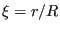
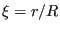
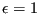
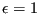

Keyword type: step
This option allows the specification of radiation heat transfer of a
surface at absolute temperature  (i.e. in Kelvin) and with emissivity
(i.e. in Kelvin) and with emissivity
 to the environment at absolute temperature
to the environment at absolute temperature  . The
environmental temperature
. The
environmental temperature  is also called the sink
temperature. If the user wishes so, it can be calculated by cavity radiation
considerations from the temperatures of other visible surfaces. The radiation heat flux  satisfies:
is also called the sink
temperature. If the user wishes so, it can be calculated by cavity radiation
considerations from the temperatures of other visible surfaces. The radiation heat flux  satisfies:
| (496) |
where
 is the Stefan-Boltzmann
constant. The emissivity takes values between 0 and 1. Blackbody
radiation is characterized by
. In CalculiX, the radiation is
assumed to be diffuse (it does not depend on the angle under which it
is emitted from the surface) and gray (it does not depend on the
wavelength of the radiation). Selecting radiation type flux requires
the inclusion of the *PHYSICAL CONSTANTS card, which specifies the
value of the Stefan-Boltzmann constant and the value of absolute zero in the user's units.
In order to specify which face the flux is entering or leaving the
faces are numbered. The numbering depends on the element type.
is the Stefan-Boltzmann
constant. The emissivity takes values between 0 and 1. Blackbody
radiation is characterized by
. In CalculiX, the radiation is
assumed to be diffuse (it does not depend on the angle under which it
is emitted from the surface) and gray (it does not depend on the
wavelength of the radiation). Selecting radiation type flux requires
the inclusion of the *PHYSICAL CONSTANTS card, which specifies the
value of the Stefan-Boltzmann constant and the value of absolute zero in the user's units.
In order to specify which face the flux is entering or leaving the
faces are numbered. The numbering depends on the element type.
For hexahedral elements the faces are numbered as follows (numbers are node numbers):
for tetrahedral elements:
for quadrilateral plane stress, plane strain and axisymmetric elements:
for triangular plane stress, plane strain and axisymmetric elements:
for quadrilateral shell elements:
for triangular shell elements:
for beam elements:
Radiation flux characterized by a uniform emissivity is entered by the distributed flux type label Rx where x is the number of the face, followed by the sink temperature and the emissivity. If the emissivity is nonuniform the label takes the form RxNUy and a user subroutine radiate.f must be provided specifying the value of the emissivity and the sink temperature. The label can be up to 17 characters long. In particular, y can be used to distinguish different nonuniform emissivity patterns (maximum 13 characters).
If the user does not know the sink temperature but rather prefers it to be calculated from the radiation from other surfaces, the distributed flux type label RxCR should be used (CR stands for cavity radiation). In that case, the temperature immediately following the label is considered as environment temperature for viewfactors smaller than 1, what is lacking to reach the value of one is considered to radiate towards the environment. Sometimes, it is useful to specify that the radiation is closed. This is done by specifying a value of the environment temperature which is negative if expressed on the absolute scale (Kelvin). Then, the viewfactors are scaled to one exactly. For cavity radiation the sink temperature is calculated based on the interaction of the surface at stake with all other cavity radiation surfaces (i.e. with label RyCR, y taking a value between 1 and 6). Surfaces for which no cavity radiation label is specified are not used in the calculation of the viewfactor and radiation flux. Therefore, it is generally desirable to specify cavity radiation conditions on ALL element faces (or on none). If the emissivity is nonuniform, the label reads RxCRNUy and a subroutine radiate.f specifying the emissivity must be provided. The label can be up to 17 characters long. In particular, y can be used to distinguish different nonuniform emissivity patterns (maximum 11 characters).
Optional parameters are OP, AMPLITUDE, TIME DELAY, RADIATION AMPLITUDE, RADIATION TIME DELAY, ENVNODE and CAVITY. OP takes the value NEW or MOD. OP=MOD is default and implies that the radiation fluxes on different faces are kept over all steps starting from the last perturbation step. Specifying a radiation flux on a face for which such a flux was defined in a previous step replaces this value. OP=NEW implies that all previous radiation flux is removed. If multiple *RADIATE cards are present in a step this parameter takes effect for the first *RADIATE card only.
The AMPLITUDE parameter allows for the specification of an amplitude by which the sink temperature is scaled (mainly used for dynamic calculations). Thus, in that case the sink temperature values entered on the *RADIATE card are interpreted as reference values to be multiplied with the (time dependent) amplitude value to obtain the actual value. At the end of the step the reference value is replaced by the actual value at that time. In subsequent steps this value is kept constant unless it is explicitly redefined or the amplitude is defined using TIME=TOTAL TIME in which case the amplitude keeps its validity. The AMPLITUDE parameter has no effect on nonuniform fluxes and cavity radiation.
The TIME DELAY parameter modifies the AMPLITUDE parameter. As such, TIME DELAY must be preceded by an AMPLITUDE name. TIME DELAY is a time shift by which the AMPLITUDE definition it refers to is moved in positive time direction. For instance, a TIME DELAY of 10 means that for time t the amplitude is taken which applies to time t-10. The TIME DELAY parameter must only appear once on one and the same keyword card.
The RADIATION AMPLITUDE parameter allows for the specification of an amplitude by which the emissivity is scaled (mainly used for dynamic calculations). Thus, in that case the emissivity values entered on the *RADIATE card are interpreted as reference values to be multiplied with the (time dependent) amplitude value to obtain the actual value. At the end of the step the reference value is replaced by the actual value at that time. In subsequent steps this value is kept constant unless it is explicitly redefined or the amplitude is defined using TIME=TOTAL TIME in which case the amplitude keeps its validity. The RADIATION AMPLITUDE parameter has no effect on nonuniform fluxes.
The RADIATION TIME DELAY parameter modifies the RADIATION AMPLITUDE parameter. As such, RADIATION TIME DELAY must be preceded by an RADIATION AMPLITUDE name. RADIATION TIME DELAY is a time shift by which the RADIATION AMPLITUDE definition it refers to is moved in positive time direction. For instance, a RADIATION TIME DELAY of 10 means that for time t the amplitude is taken which applies to time t-10. The RADIATION TIME DELAY parameter must only appear once on one and the same keyword card.
The ENVNODE option applies for uniform radiation conditions only and allows the user to specify a sink node instead of a sink temperature. In that case, the sink temperature is defined as the temperature of the sink node.
Finally, the CAVITY parameter can be used to separate closed cavities. For the calculation of the viewfactors for a specific face, only those faces are considered which:
The name of the cavity can consist of maximum 3 characters (including numbers). Default cavity is ' ' (empty name). Since the calculation of the viewfactors is approximate, it can happen that, even if a cavity is mathematically closed, radiation comes in from outside. To prevent this, one can define the faces of the cavity as belonging to one and the same cavity, distinct from the cavities other faces belong to.
Notice that in case an element set is used on any line following *RADIATE this set should not contain elements from more than one of the following groups: {plane stress, plane strain, axisymmetric elements}, {beams, trusses}, {shells, membranes}, {volumetric elements}.
In order to apply radiation conditions to a surface the element set label underneath may be replaced by a surface name. In that case the ``x'' in the radiation flux type label takes the value zero.
If more than one *RADIATE card occurs in the input deck the following rules apply: if a *RADIATE applies to the same node and the same face as in a previous application then the prevous value and previous amplitude (including radiation amplitude) are replaced.
First line:
Following line for uniform, explicit radiation conditions:
Following line for nonuniform, explicit radiation conditions:
Following line for cavity radiation conditions with uniform emissivity and sink temperature:
Following line for cavity radiation conditions with nonuniform emissivity and sink temperature:
Example: *RADIATE 20,R1,273.,.5
assigns a radiation flux to face 1 of element 20 with an emissivity of 0.5 and a sink temperature of 273.
Example files: oneel8ra, beamhtcr.